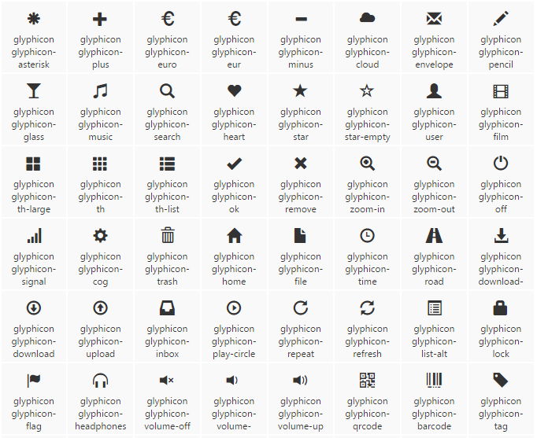
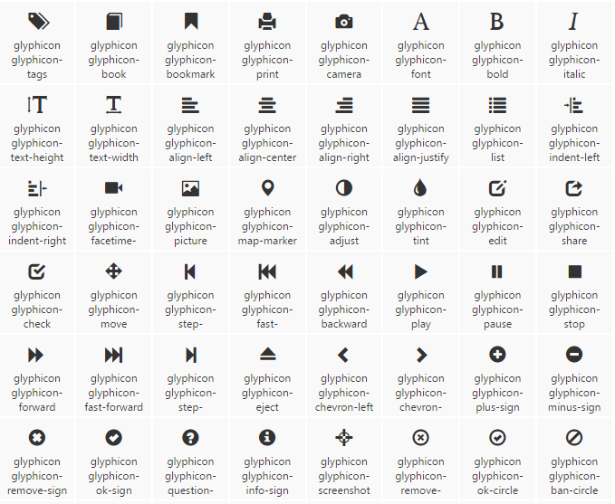
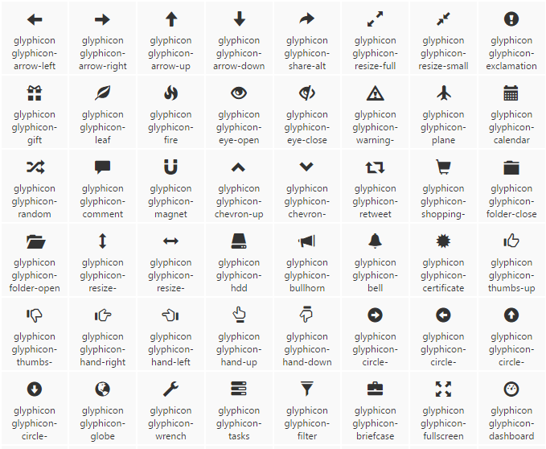
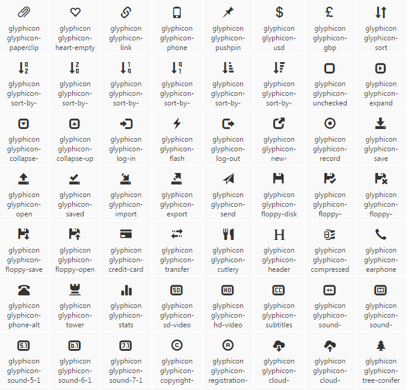
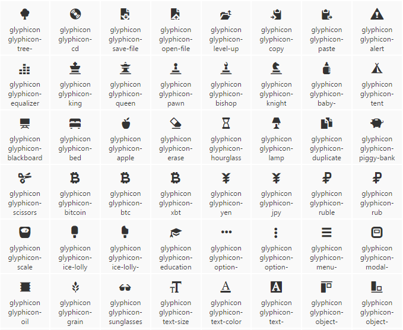
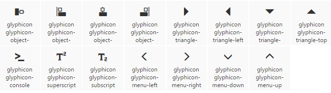
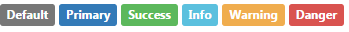
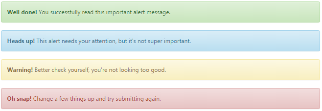

回到
回到顶部
bootstrap 组件
1.Glyphicons 字体图标 所有可用的图标：      如何使用：
1.不要和其他组件混合使用
2.只对内容为空的元素起作用
<button type="button" class="btn btn-default btn-lg">
<span class="glyphicon glyphicon-star" aria-hidden="true"></span> Star
</button>
2.下拉菜单
将下拉菜单触发器和下拉菜单都包裹在 .dropdown 里，配合使用dropdown-menu
<div class="dropdown">
<button class="btn btn-default" type="button" data-toggle="dropdown">
Dropdown //触发按钮
<span class="caret"></span> //小三角
</button>
<ul class="dropdown-menu"> //下拉菜单
<li><a href="#">Something else here</a></li>
<li role="separator" class="divider"></li>
<li><a href="#">Separated link</a></li>
</ul>
</div>
通过为下拉菜单的父元素设置 .dropup 类，可以让菜单向上弹出（默认是向下弹出的）。
对齐：默认情况下，下拉菜单自动沿着父元素的上沿和左侧被定位为 100% 宽度,.dropdown-menu-right 类可以让菜单右对齐。(不建议使用 .pull-right)
标题：<li class="dropdown-header">Dropdown header</li>
分割线：<li role="separator" class="divider"></li>
禁用的菜单项：.disabled
3.按钮组(.btn-group)按钮工具栏：把一组 <div class="btn-group"> 组合进一个 <div class="btn-toolbar"> 中就可以做成更复杂的组件。<li role="separator" class="divider"></li>
尺寸：.btn-group-lg、.btn-group-sm、.btn-group-xs
嵌套：想要把下拉菜单混合到一系列按钮中，只须把 .btn-group 放入另一个 .btn-group 中。
垂直排列：.btn-group-vertical(分列式按钮下拉菜单不支持这种方式。)
两端对齐排列的按钮组：
关于 <a> 元素,只须将一系列 .btn 元素包裹到 .btn-group.btn-group-justified 中即可。
关于 <button> 元素为了将 <button> 元素用于两端对齐的按钮组中，必须将每个按钮包裹进一个按钮组中。
把按钮式下拉菜单放到.btn-group中
分裂式按钮下拉菜单：只是多一个分开的按钮.
尺寸：按钮式下拉菜单适用所有尺寸的按钮。
向上弹出式菜单：给父元素添加 .dropup 类就能使触发的下拉菜单朝上方打开。
5.输入框组通过在文本输入框 <input> 前面、后面或是两边加上文字或按钮，可以实现对表单控件的扩展。为 .input-group 赋予 .input-group-addon 或 .input-group-btn 类，可以给 .form-control 的前面或后面添加额外的元素。
不支持在输入框的单独一侧添加多个额外元素（.input-group-addon 或 .input-group-btn）。我们不支持在单个输入框组中添加多个表单控件。
尺寸：.input-group-lg、.input-group-sm
作为额外元素的多选框和单选框：可以将多选框或单选框作为额外元素添加到输入框组中。
作为额外元素的按钮：为输入框组添加按钮需要额外添加一层嵌套，不是 .input-group-addon，而是添加 .input-group-btn 来包裹按钮元素。
作为额外元素的按钮式下拉菜单：可以将按钮式下拉菜单作为额外元素添加到输入框组中。
作为额外元素的分裂式按钮下拉菜单:可以将分裂式按钮下拉菜单作为额外元素添加到输入框组中。
6.导航Bootstrap 中的导航组件都依赖同一个 .nav 类，状态类也是共用的。改变修饰类可以改变样式。
标签页:.nav-tabs
胶囊式标签页:.nav-pills
垂直方向胶囊式标签页:.nav-stacked
两端对齐的标签页:在大于 768px 的屏幕上，通过 .nav-justified 类可以很容易的让标签页或胶囊式标签呈现出同等宽度。在小屏幕上，导航链接呈现堆叠样式。
禁用的链接:.disabled
添加下拉菜单:ul .nav-tabs 在li里嵌套一个下拉菜单
带下拉菜单的胶囊式标签页：.nav-pills,其他同上
7.导航条.navbar .navbar-default
品牌图标:.navbar-header里替换为img
表单:将表单放置于 .navbar-form 之内可以呈现很好的垂直对齐，并在较窄的视口（viewport）中呈现折叠状态。（ 某些表单组件，例如输入框组，可能需要设置一个固定宽度，从而在导航条内有合适的展现。）
<form class="navbar-form navbar-left" role="search">
<div class="form-group">
<input type="text" class="form-control" placeholder="Search">
</div>
<button type="submit" class="btn btn-default">Submit</button>
</form>
按钮:于不包含在 <form> 中的 <button> 元素，加上 .navbar-btn 后，可以让它在导航条里垂直居中。
文本:把文本包裹在 .navbar-text中时，为了有正确的行距和颜色，通常使用 <p> 标签。
胶囊式标签页:.nav-pills
非导航的链接:.navbar-link 类可以让链接有正确的默认颜色和反色设置
胶囊式标签页:.nav-pills
组件排列:.navbar-left 和 .navbar-right
固定在顶部:.navbar-fixed-top
固定在底部:.navbar-fixed-bottom
静止在顶部:.navbar-static-top 类即可创建一个与页面等宽度的导航条，它会随着页面向下滚动而消失。
反色的导航条:.navbar-inverse
8.路径导航:.breadcrumb 在一个带有层次的导航结构中标明当前页面的位置。 9.分页：.pagination禁用和激活状态:.disabled
尺寸:pagination-lg 或 .pagination-sm
翻页:.pager
对齐链接:.previous .next
可选的禁用状态:.disabled
10.标签可用的变体:.label-default、.label-primary、.label-success、.label-info、.label-warning、.label-danger
 11.徽章(兼容IE8)给链接、导航等元素嵌套 <span class="badge"> 元素，可以很醒目的展示新的或未读的信息条目。
12.巨幕.jumbotron 这是一个轻量、灵活的组件，它能延伸至整个浏览器视口来展示网站上的关键内容。如果需要让巨幕组件的宽度与浏览器宽度一致并且没有圆角，请把此组件放在所有 .container 元素的外面，并在组件内部添加一个 .container 元素。
13.页头.page-header 能够为 h1 标签增加适当的空间，并且与页面的其他部分形成一定的分隔。它支持 h1 标签内内嵌 small 元素的默认效果，还支持大部分其他组件（需要增加一些额外的样式）。
14.缩略图.thumbnail 通过缩略图组件扩展 Bootstrap 的 栅格系统，可以很容易地展示栅格样式的图像、视频、文本等内容。
15.警告框将任意文本和一个可选的关闭按钮组合在一起就能组成一个警告框，.alert 类是必须要设置的，另外我们还提供了有特殊意义的4个类（例如，.alert-success），代表不同的警告信息。
默认样式的实例:.alert-success、.alert-info、.alert-warning、.alert-danger
 16.进度条基本:.progress
<div class="progress">
<div class="progress-bar" style="width: 60%;">
</div>
</div>
带有提示标签的进度条:在上方进度条div里添加内容，eg：60%（在展示很低的百分比时，如果需要让文本提示能够清晰可见，可以为进度条设置 min-width 属性。）
根据情境变化效果:.progress-bar-success、.progress-bar-info、.progress-bar-warning、.progress-bar-danger
条纹效果:IE9 及更低版本不支持。.progress-bar-striped
动画效果:.active IE9 及更低版本的浏览器不支持。
堆叠效果:把多个进度条放入同一个 .progress 中，使它们呈现堆叠的效果。
17.媒体对象.media > .media-left .media-body > .media-object .media-heading
.media-left 和 .media-right 替代了他们，不同之处是，在 html 结构中， .media-right 应当放在 .media-body 的后面。
对齐:图片或其他媒体类型可以顶部、中部或底部对齐。默认是顶部对齐。
媒体对象列表:用一点点额外的标记，就能在列表内使用媒体对象组件（对评论或文章列表很有用）。
18.列表组基本:.list-group > .list-group-item
徽章:给列表组加入徽章组件，它会自动被放在右边。
链接:用 a 标签代替 li 标签可以组成一个全部是链接的列表组（还要注意的是，我们需要将 ul 标签替换为 div 标签）。没必要给列表组中的每个元素都加一个父元素。
按钮:列表组中的元素也可以直接就是按钮（也同时意味着父元素必须是 div 而不能用 ul 了），并且无需为每个按钮单独包裹一个父元素。注意不要使用标准的 .btn 类！
被禁用的条目:为 .list-group-item 添加 .disabled 类
情境类:.list-group-item-success、.list-group-item-info、.list-group-item-warning、.list-group-item-danger
还可以为列表中的条目设置 .active 状态。